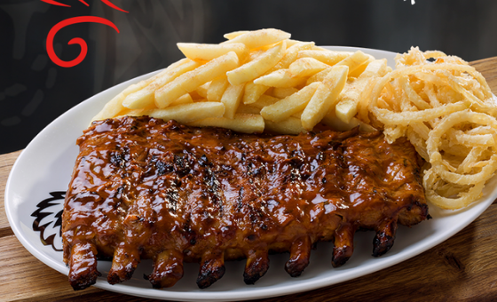
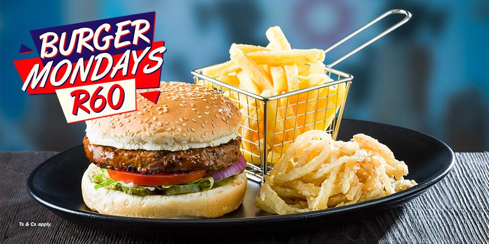

Spur Corporation (doing business as Spur Steak Ranches) (JSE: SUR) is a steakhouse franchise restaurant chain originating from South Africa with a focus on family dining. The head office of Spur Corporation is situated in Century City, Cape Town. Although the founding and flagship brand is the Spur steakhouse restaurants, the company owns a number of other, predominantly South African, restaurant brands. Despite its South African origin, Spur restaurants use Native American themes extensively, both in its marketing and decor. The restaurant brands itself as "the official restaurant of the South African family"; as such, most Spur restaurants include a children's play area.
  Back